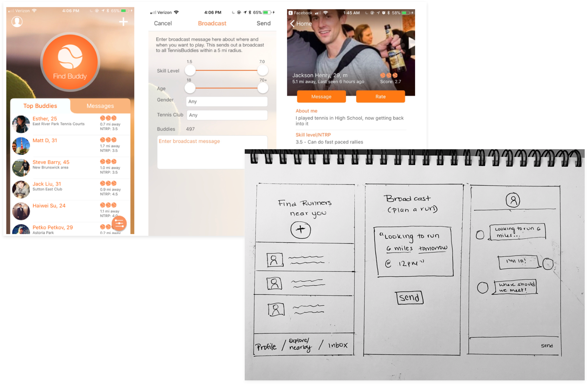
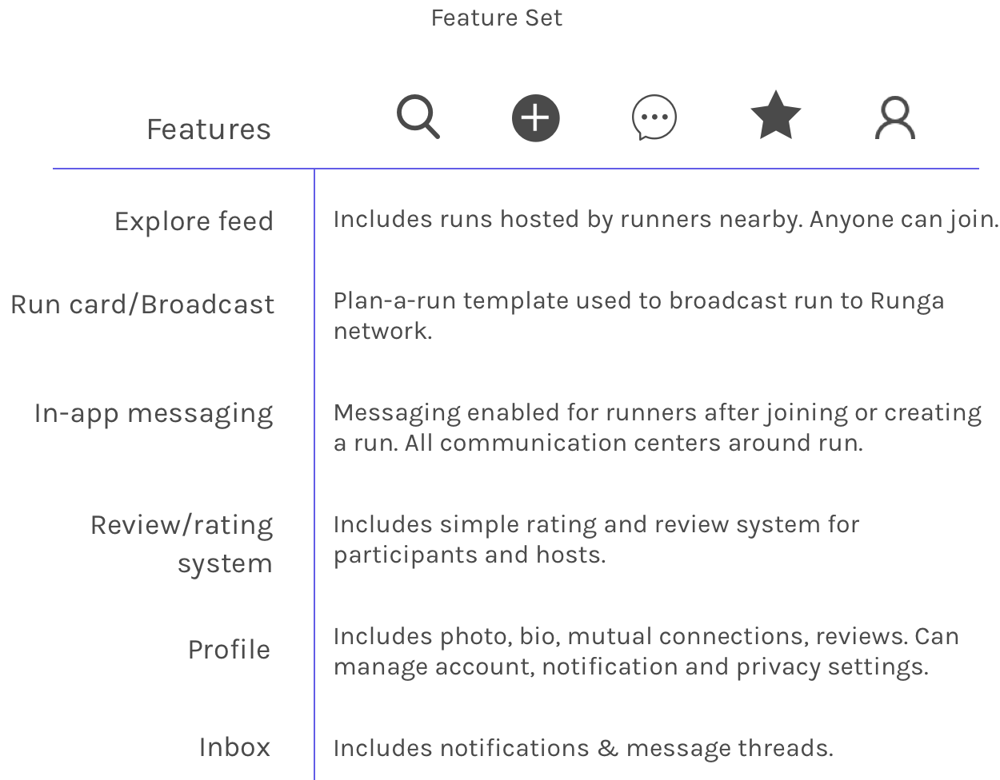
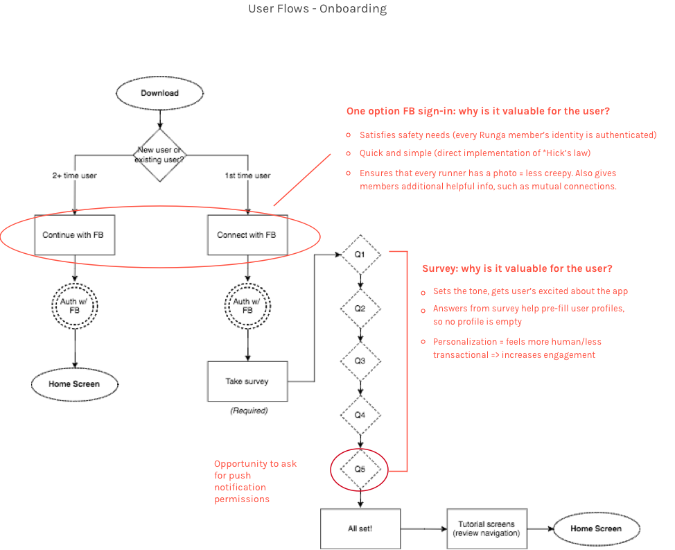
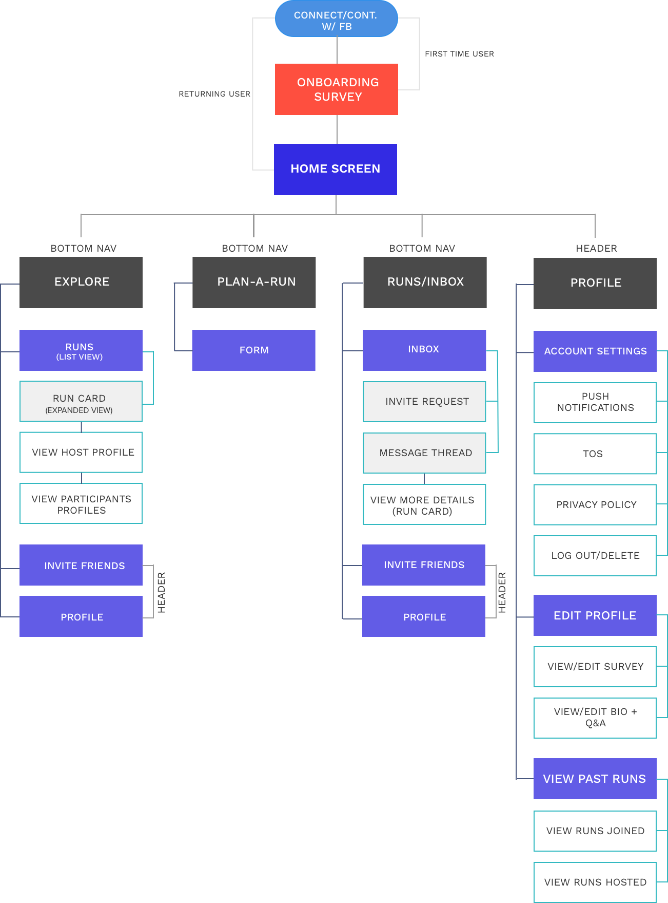
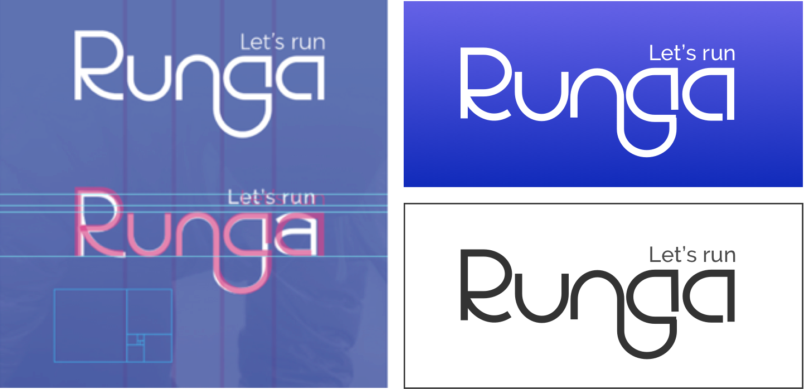
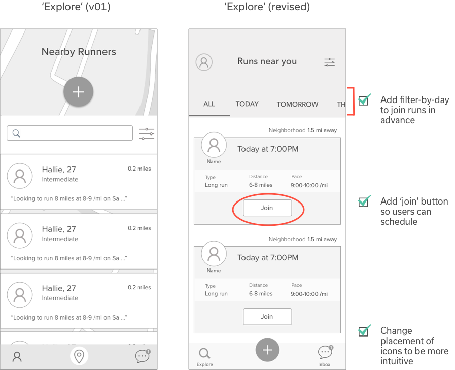
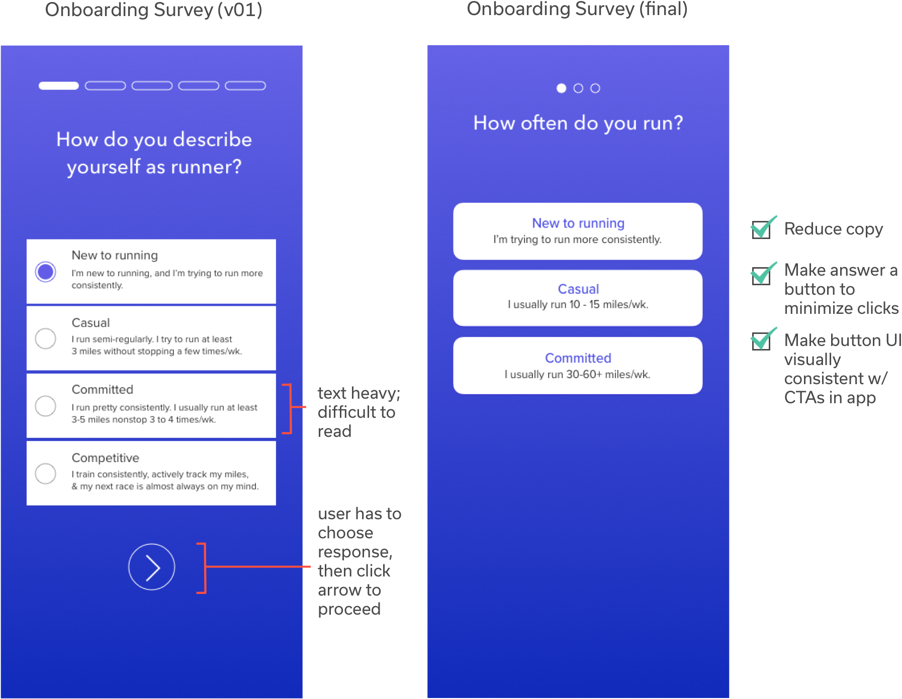
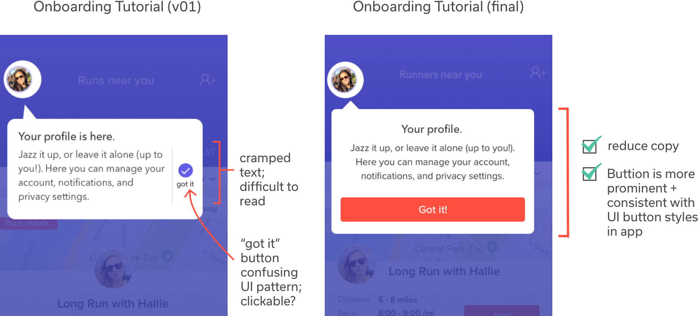
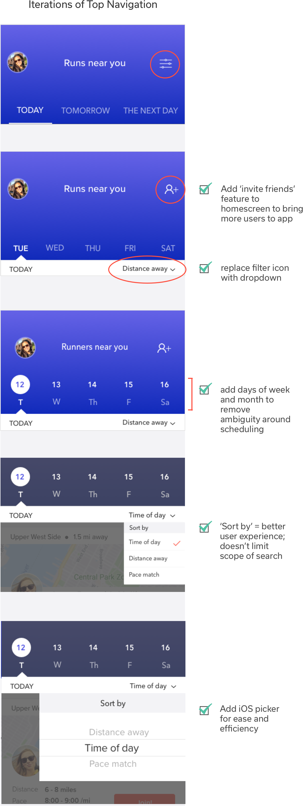
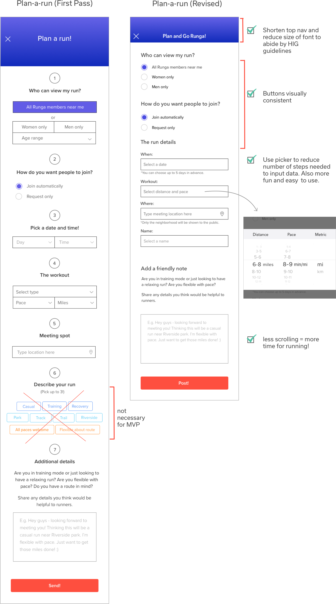

2018 Melanie Tabroff
Designed & Developed by me, with Jack's cold brew by my side
It’s not hard to spot runners — look outside and you’ll probably see someone wearing shiny spandex breeze by you. We’re everywhere!
Yet, finding the right people to run with at a time and place that’s convenient can be a challenge. Through research and validation, I discovered that there aren’t many products that help runners easily connect with likeminded runners nearby for a workout.
As with any early stage idea, I like to begin by asking lots of questions:
Do most runners find it difficult to meet up with other runners? Is the challenge to find likeminded workout buddies more felt by competitive runners than casual? Females than males? Runners in suburbs vs. cities? What products already exist to help connect athletes and what are their limitations?
Through user and market research, I set out to test my assumptions and uncover some answers. My goal? Understand who I am actually building a product for and how I am going to solve their problems.
My first step in understanding the problem was using an online survey to gather data and collect feedback about runners’ experiences with finding a running group/buddy.
I asked a variety of open-ended questions, like: Is it challenging to find others to run with? Why, why not? Do you prefer running alone, in a group, or with a buddy? If it depends, why? If you were to meet other people you don’t know for a run, what qualifiers would you want to know beforehand to help you decide?
My survey received 66 responses. Some of the key takeaways from results were that:
Results from my initial survey confirmed that most runners experience difficulty meeting up with runners, mainly due to difficulty coordinating schedules and finding convenient meeting spots. Yet, I still needed to know more about the people who would be using a product, like Runga.
To better understand the driving factors that motivate runners to meet, the tools they use to find runners, and their frustrations with those tools, I selected 10 survey respondents and conducted a mix of phone interviews and facebook messenger follow-up chats over 3 days.
After so many conversations with runners, it became clear to me that the people that relate most to the problem are casual/committed runners who are already looking for ways to make running more engaging.
These people attend organized runs through Meetup. They also go to retail stores to join run clubs and meet other runners. But, scheduled runs aren’t always held at convenient times and locations, and the turnout can be unpredictable. These people are also travellers who would like to find a buddy to discover new running routes.
These people are runners who simply want to change up the monotony of running — and meeting the right people can help!
Armed with a more robust understanding of the mental models of runners, I created personas based on real people I interviewed. By doing so, I was able to bring more empathy to my design process early on and throughout.
Creating personas also helped clarify the demographic and qualifications of my target audience:
Men & women, between 20 and 40 years old, who are already committed to running ~10-30 miles a week. While my app could be used by runners of all levels, my most loyal users would be people who are committed to running on a consistent basis. More elite runners who already belong to a training group or team could certainly use Runga, but wouldn’t be my prime user base.

After identifying my personas, I set out to examine the tools they already use to find people to run with. My goal was to identify pain points runners experience with those existing products so that I could design around those frustrations.
I set out to design a simple app for committed runners that would effectively 1. facilitate discovery
2. provide a framework for scheduling runs, and 3. encourage social accountability.
During the early stage of the project, I began sketching some ideas for how Runga could potentially work. These sketches were inspired by a tennis buddy app I had discovered called Tennis buddy: I loved the simple functionality of the tennis app: users can see who’s nearby, broadcast “I’m looking for a tennis buddy”, set broadcast preferences, and then wait for players to respond to their request. It was stripped of all bells and whistles and accomplished the goal of connecting tennis players without feeling like a dating app. Perhaps a similar approach could be used for runners? With some ideas sketched out, I set out to determine the minimum amount of features necessary to accomplish the main goals my MVP would achieve. I created user stories with my personas in mind from which I was able to establish a concise list of MVP features. These features would effectively solve a problem experienced by casual/committed runners who want an accessible and reliable way to meet up with people nearby for a workout. Next I mapped out user flows for Runga, from onboarding to planning a run, using Draw.io. I went through a few iterations with these. Here is an example: The effort spent creating these flows saved me time when beginning the visual designs because they helped ensure I wasn’t forgetting any screens. Once I finalized the flows, I organized them into a site map to help think through and visualize the layers of my app. When people say they want to find a running partner/group, what they really mean is that they want to find a way to make running more engaging and motivating. I wanted the visual designs for runga to feel engaging, motivating, and energizing. I also wanted to convey a friendly, trustworthy, and playful feel but also maintain a clean aesthetic. This was done by pairing subtly playful fonts with strong bold colors. With pencil and paper, I wrote out every word associated with running to help jumpstart the brainstorming process for naming the app. After cycling through a host of options, from the cliche “runbuds” to the more abstract “laceup”, I landed on “Runga.” (Truthfully, it came to me after a yoga class...Chatturanga was on my mind!) The name also reminded me of Renga, a collaborative form of Japanese poetry. Running, like poetry, can be thought of as a solitary activity. Yet, when done with people, it can be much more fun! The logo was designed with the goal of being simple, clean and effectively communicating the brand value. I designed each lettertype to emulate the look of a route on a map. The connection between the “n” and the “g” helps communicate the overarching goal of togetherness, complemented by the tagline “let’s run.” In addition, the curved ligatures reinforce the friendly vibe while still maintaining a strong presence. For the color pallete, I chose the vibrant blue/purple as the main background color for onboarding and for the top navigation throughout the app. The blue/purple aligns well the brand values of strength and trust. It also adds nice contrast to the white space on the screens. For the buttons, I chose the bright orange/red to contrast the deep blue. It’s vibrant color communicates a strong energy. The subtle gradients, for both the buttons and top navigation, also add an energizing feel. For the font, I chose two san serif fonts: Avenir Next for headings and subheadings and Proxima Nova for body texts. Both fonts feel friendly without compromising strength. They also come with a wide range of weights, which helped facilitate the visual hierarchy of information within the app. Before jumping into visual design, I used Sketch to create wireframes that would be used to test the flow and functionality of the app. The user flows and sitemap I had created were used as a reference. During the initial rounds of testing, I was curious to get feedback on the following: placement of icons, filter options, and overall feel and functionality. Below is a sample of some of my initial screens: Conversations with early testers helped illuminate an area of concern: the “I’m looking to run at this time…” broadcast feature provides a framework for initiating plans, yet leaves room for people to be non-committal. Since my initial goal was to design a solution that encourages social accountability, I needed to adjust my designs to make planning runs more actionable. Here’s how I decided to make that happen: With a new plan, I adjusted my screens (and user flows) to accommodate the aforementioned goals. I was curious how runners would respond to my new approach, so I tested them with the same users and asked them to explain which one they would be more excited to use and why. A majority of runners preferred the revised version because the focus was on the run itself and eliminates ambiguity around planning. Below illustrates how I revised the ‘Explore’ screen based on feedback and new goals: My initial rounds of wireframe testing served instrumental in that they helped me optimize the information hierarchy and arrangement of content on each screen. In addition, conversations with testers introduced me to new ideas for how to improve the overall user experience. With the visual system in place, I was ready to create my high-fidelity mockups. For each section of my app (from onboarding to planning a run to rating runs) I focused on reducing cognitive load and ensuring a visual consistency throughout the entire product. The onboarding flow for Runga was carefully crafted to get users excited about the app while offering a personalized, conversational experience through a ‘get to know you’ survey. During the wireframing stage, I tested the flow of the onboarding screens to ensure I was hitting the following criteria: explaining the value of Runga, introducing key features, and asking users for permissions by framing the ask in terms of value added to the user. The feedback was overall positive; however, I noticed that it took users a bit too long to go through the entire flow. I set out to streamline it. I was able to reduce the onboarding survey from 5 to 3 questions by honing in on the most important value-added questions. I also reduced the number of clicks users would have to take to proceed to the next question by changing the UI of the buttons. For the tutorial screens, I adjusted the copy and redesigned the buttons to better match the visual elements used throughout the app. The goal of the ‘Explore’ feed was to solve the problem of discovery. Runners would be able to easly see runs happening nearby, join and go! The biggest challenge from a UX perspective was optimizing the visual hierarchy of information to allow for successful browsing. For the top navigation, this meant providing an intuitive filter/sort system to allow users to easily find what they’re looking for in less time. For the run card, this meant providing just enough information to inform the user about the essential details for the run (who, what, when, and where) without creating information overload. This also meant displaying the text on the screen in a way that facilitates easy browsing. To help determine which designs accomplished this, I conducted a series of preference tests. Below is an example: The goal of the plan-a-run feature was to give runners an easy framework to plan a run with people nearby, yet detailed enough to require intention. I wanted to ensure that the plan itself included sufficient detail such that participants would understand what’s expected and feel comfortable joining. After initial testing, I realized that the current form was too long. I set out to simplify it by reducing unnecessary steps and cleaning up the UI. In order to increase accountability, I gave runners the ability to rate each other and leave reviews. These ratings and reviews can be found on the runners’ profile pages. The presence of reviews helps runners decide whether to join a run by reducing feelings of uncertainty around the safety and reliability of a runner. In addition to user-generated reviews and ratings, I also added a badge system that gamifies the running experience to help drive engagement. For example, if runners host 5 runs they receive a “5 Runga Runs” badge. If they use the app enough, they could potentially earn an “automatic entry to NYC marathon” badge. This slot-machine style reward system is effective in its ability to motivate users to attain predictable and unpredictable rewards. Creating Runga from concept to prototype was a challenging yet rewarding experience, one that has taught me to: In order to create a dynamic experience, my next step is to turn my mockups into an interactive and animated prototype. I will then test specific interactions, like rating a run and leaving a review, to fully optimize the experience for runners and revise my designs accordingly.Imagine— initial sketches

Create— mvp feature set & user stories

Create— flows & Site Map


Create the look— visual design
Brand identity
Name & logo

Color palette, typography & iconography

Test & refine— wireframes
Some feedback:
"Feels a bit transactional…"
“I like that you can set broadcast preferences but I feel some of these are too limiting, like FB connections only"
“Really like the simplicity!"
If the goal is to connect runners for a workout, how can I make planning a run more actionable?
Iterate with intention— wireframes round 2

Execute— hi-fi mockups
Onboarding (get users excited)


Explore (make discovery simple)


Plan-a-run (help runners plan)

Badges & ratings (increase accountability)

Evaluate— key learnings & next steps
It was very tempting to jump to the visual stage without first establishing clear goals for what my designs should accomplish. There were times when my desire to be “creative” would lead me down a rabbit-hole of experimentation. Keeping to a process helped me pause when I go sidetracked and ask myself, “how will this help me progress to the next step?”
I learned that perfectionism is just fear in a fancy outfit — and this revelation has really stuck with me. The time time spent putting work out there and getting feedback is often much more valuable than time spent working on making designs “better.”
Rather than ask, “what do you think?” I learned to give context and explain the goals of my designs before asking for feedback. I found it helpful to get specific with my questions, e.g. “what could be removed to make this more simple?” in order to receive actionable feedback that goes beyond “I like it.” I also learned that users don’t always know what they want and sometimes their feedback won’t necessarily contribute to a better solution. As long as I can defend my design choices, I can move forward.
When beginning to build my hi-fi mockups, it was easy for me to derail from this simple yet highly useful principle. With every design iteration, I sought to establish a visual and functional consistency. This meant keeping all fonts, sizes, buttons, labeling, and interactions consistent throughout the product.
Next Steps
(🙏 Thank you for making it this far!)